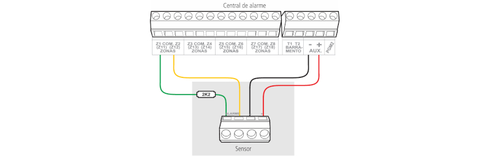
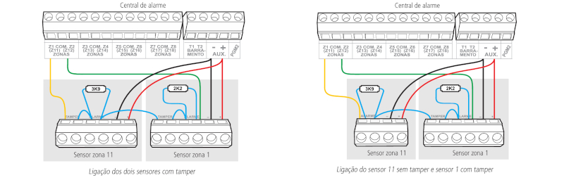
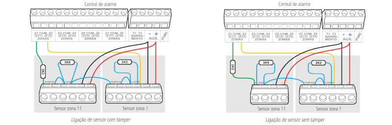
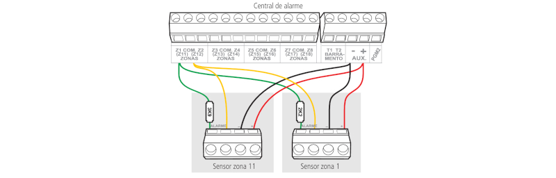

Funcionamento de uma Central de Alarme
Uma central de alarme é um sistema de segurança projetado para detectar e alertar sobre intrusões, incêndios ou outras emergências em uma propriedade. Aqui está uma visão geral de como uma central de alarme funciona:
Painel de Controle ou Central de Alarme: O painel de controle é o cérebro do sistema de alarme. Ele recebe sinais dos sensores e decide se deve acionar o alarme. O painel de controle pode ser programado para responder a diferentes tipos de eventos de maneiras específicas.
Sensores: A central de alarme é conectada a vários sensores que monitoram diferentes áreas da propriedade. Esses sensores podem incluir detectores de movimento, sensores de portas e janelas, detectores de fumaça e sensores de quebra de vidro.
Alarmes: Quando um sensor detecta uma atividade suspeita, ele envia um sinal ao painel de controle. Se o painel de controle determinar que a atividade é uma ameaça, ele aciona os alarmes. Os alarmes podem incluir sirenes, luzes piscantes e notificações enviadas ao proprietário ou a uma empresa de monitoramento.
Comunicação: Muitas centrais de alarme modernas estão conectadas a redes de comunicação, como linhas telefônicas, internet ou redes celulares. Isso permite que o sistema envie alertas para o proprietário ou para uma central de monitoramento em caso de emergência.
Monitoramento: Algumas centrais de alarme são monitoradas por empresas de segurança que fornecem serviços de monitoramento 24 horas por dia. Quando um alarme é acionado, a empresa de monitoramento pode verificar a situação e, se necessário, enviar autoridades de emergência para o local.
Desativação: O proprietário pode desativar o alarme usando um código de acesso ou um controle remoto. Isso é útil para evitar falsos alarmes quando o proprietário entra na propriedade.
Principais Caracteristicas
A grande maioria das centrais de alarme, são compostas por:
Entrada Principal de Energia:
Esta conexão pode variar entre fabricantes de central de alarme, podendo ser ligado: Fonte chaveada, Transformador ou Placa fonte. Em uma eventual troca, sempre deve-se observar modelos, conexões e tensão de trabalho para que não haja queima do equipamento.
Entrada para Bateria:
Esta conexão pode variar entre fabricantes de central de alarme, podendo ser com conector para chicote ou soldado diretamente na placa da central. Em uma eventual troca, sempre deve-se observar a polaridade da conexão com a polaridade da bateria pois, a inversão poderá ocasionar a queima do e equipamento e também gera risco de explosões.
Saída de Sirene:
A saída de sirene normalmente gera uma tensão de 12 Volts com corrente maxima de 1 Amper com Bateria, Devemos sempre observar o consumo do dispositivo de alerta que será ligado nesta saída pois, dispositivos com corrente superior ou a soma de varios dispositivos ligados justos, podem não funcionar corretamente.
Obs.: Se houver necessidade de fazer este tipo de ligação, podemos usar um RELÉ AUXILIAR para esta ligação.
Entrada de Sensores:
Entrada de sensores sempre deve ser conferido o manual de instruções do equipamento, pois o sistema de ligação é completamente diferente entre marcas e modelos. Existem centrais com duplicação de zona, outras não. Existem centrais com entrada programavel, outras não. Além do esquema de ligação, que podem ser:
Simples, sem Resistor de Final de Linha:

Este modo de ligação padrão é o mais simples, porém o mais vulnerável à sabotagens, pois se o fio do sensor for colocado em curto-circuito, a central de alarme não irá reconhecer o problema. A seguir, um exemplo de ligação de um sensor na zona 1 da central (Z1).
Simples, sem Resistor de Final de Linha e com Detecção de Tamper

Este modo de ligação traz mais segurança que o anterior, pois oferece detecção de abertura de tamper, contato Normalmente Fechado (NC), presente em alguns modelos de sensores infravermelho. Se houver tentativa de sabotagem da caixa do sensor, este contato se abrirá indicando que houve violação. Se a função Falhas (que geram disparos da sirene) estiver ativada, a sirene irá disparar mesmo se a central de alarme estiver desativada, consulte o tópico 6.24. Ativação/ desativação de funções. Este modo de ligação vale para todas as zonas da central. Veja a seguir a forma de ligação para sensores que possuem tamper e para sensores que não possuem tamper. Exemplo de ligação de um sensor na zona 1 da central (Z1). Obs.: este modo de ligação não detecta curto-circuito da f iação.
Simples, com Resistor de Final de Linha e Detecção de Curto-Circuito na fiação:
Este modo de ligação detecta se o fio do sensor foi colocado em curto-circuito. O resistor de 2K2 Ω deve ser instalado junto ao sensor e não diretamente no borne da zona da central, pois este não terá nenhuma utilidade e a segurança do sistema será comprometida. Neste modo de ligação não há detecção de tamper. A seguir, um exemplo de ligação de um sensor na zona 1 da central (Z1).
Simples, com Resistor de Final de Linha, Detecção de Tamper e de Curto-Circuito na fiação:

É o modo de ligação mais completo para zonas Simples. O resistor de 2K2 Ω deve ser instalado junto ao sensor e não diretamente no borne da zona da central, pois este não terá nenhuma utilidade e a segurança do sistema será comprometida. Este modo de ligação vale para todas as zonas da central. Consulte a seguir, a forma de ligação para sensores que possuem tamper e para sensores que não possuem tamper, como por exemplo; sensores de abertura.
Dupla, sem Resistor de Final de Linha:

Com a função Zona dupla habilitada, o sistema reconhece duas zonas por borne de entrada (as zonas do teclado só funcionam como Zona simples), neste caso, ficam 16 zonas com fio na central. Esta configuração é a menos segura para Zonas duplas, pois não reconhece curto-circuito da fiação. O sensor ligado no resistor de 2K2 Ω fica sendo a zona 1, o sensor ligado ao resistor de 3K9 Ω na zona 11.
Dupla, sem Resistor de Final de Linha e com Detecção de Tamper:
Com a função Zona dupla habilitada, o sistema reconhece duas zonas por borne de entrada (as zonas do teclado só funcionam como Zona simples), neste caso, ficam 16 zonas com fio na central. Como o modo de ligação vale para todas as zonas; consulte a seguir a forma de ligação para sensores com tamper e para sensores sem tamper. O sensor ligado no resistor de 2K2 Ω fica sendo a zona 1, o sensor ligado ao resistor de 3K9 Ω a zona 11.
Dupla, com Resistor de Final de Linha, Detecção de Tamper e de Curto-Circuito da fiação:
Este é o modo mais completo. Detecta curto-circuito na fiação e abertura de tamper. O resistor de 2K2 Ω deve ser instalado junto ao sensor e não diretamente no borne da zona da central, pois este não terá nenhuma utilidade e a segurança do sistema será comprometida. É recomendado configurar a central para este modo, pois apesar de ser o mais complexo para realizar a ligação dos sensores, este é também o que oferece mais segurança para o sistema de alarme. Como o modo de ligação vale para todas as zonas, consulte a seguir os esquemas para ligação de sensores com tamper e de sensores sem tamper. O sensor ligado no resistor de 2K2 Ω fica sendo a zona 1, o sensor ligado ao resistor de 3K9 Ω a zona 11.
Duplicação em Paralelo com Detecção de Curto-Circuito da fiação:
Neste modo de ligação, os sensores são ligados em paralelo na entrada da zona, como se fossem duas entradas independentes e o resistor é ligado em série com o sensor. Este modo de ligação detecta se o fio do sensor foi colocado em curto-circuito, mas não possui detecção de tamper. Para maior segurança, sempre ligue o resistor junto do sensor e não diretamente no borne da zona da central, pois este não terá nenhuma utilidade. O sensor ligado no resistor de 2K2 Ω fica sendo a zona 1, o sensor ligado ao resistor de 3K9 Ω a zona 11.
Barramento para Modulos de Comunicação:
Conexão de barrameno é o ponto de entrada para Teclados, Receptores de Dispositivos sem Fio, Expansores de Zonas, entre outros. Obs: Normalmente, cada marca e modelo tem o seu próprio protocolo de comunicação, ou seja, dispositivos de barramento devem ser compativeis com o modelo de central usada, consulte o manual do produto.
Saída de Energia (AUX):
A saída de energia ou saída auxiliar, é o local onde todos os dispositivos da central são alimentados como: Sensores, Teclados, Receptores, etc.
PGM - Relé de contato programável:
As saídas programáveis PGM podem ser acionadas por diversos eventos, como ativação/desativação da central de alarme,
disparo, corte da linha telefônica, etc. Para conhecer todas as possibilidades, veja o item Atributos de zona.
Esta saída funciona como um contato Normalmente Aberto (NO), e é acionada quando o evento programado ocorrer,
podendo trabalhar nos seguintes modos:
» Liga/Desliga: quando o evento ocorrer, a PGM será ligada e só será desligada quando o evento cessar. Por exemplo, a PGM é acionada quando ocorrer um disparo e só será desligada quando o disparo cessar.
» Pulsado: quando ocorrer o evento programado, a PGM ficará ligada por tempo programável de 1 a 8 segundos e depois será desligada, independentemente do evento ter cessado ou não.
» Pelo tempo de sirene: se a sirene estiver desligada, o funcionamento será igual ao modo Liga/Desliga. Se a sirene estiver ligada, a saída permanecerá ligada durante o disparo da sirene. Por exemplo, ao programar a saída PGM para ser acionada em caso de corte do fio da sirene, esta permanecerá ativada durante o tempo de sirene programado.
A saída PGM tem capacidade de fornecer no máximo 50 mA a 13 Vdc, sendo que o Negativo do equipamento que será acionado, deve ser ligado na saída PGM e o Positivo no (+) da saída auxiliar. Se for utilizar um equipamento que necessite de maior corrente ou tensão, é necessário o uso de um RELÉ AUXILIAR.
Sistema de comunicação por Linha Telefonica
O borne Linha é a entrada da linha telefônica, ligue nele os dois fios da linha telefônica pública. O borne Fone é a saída da linha telefônica, ligue nele os fios destinados aos aparelhos telefônicos instalados no local.